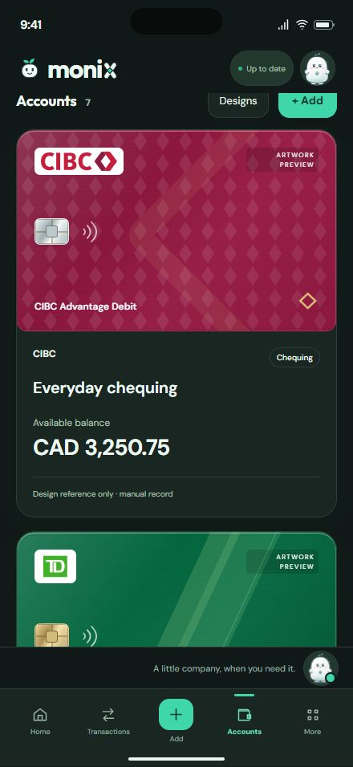
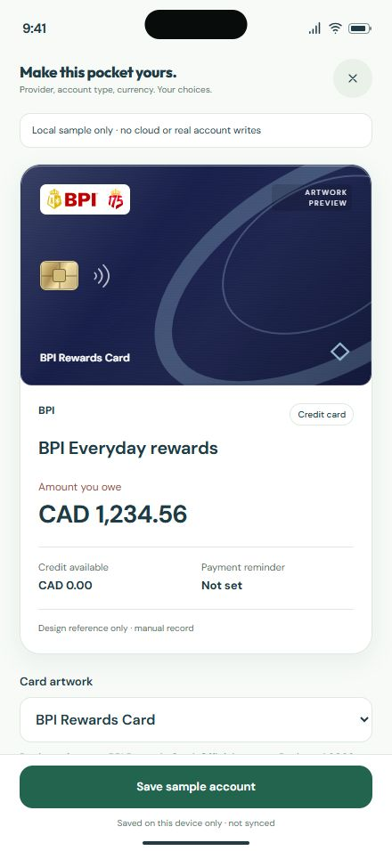
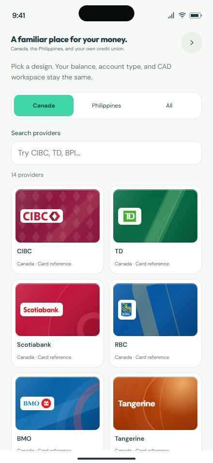

104 artwork variants · 28 providers · Canada + the Philippines
iPhone 16 Pro Max440 × 956 CSS pixels · sample records

Static foil, texture, and patterns above a readable financial area.

Credit debt and limits remain separate from artwork choices.

Search providers and review debit, credit, wallet, and cash designs.